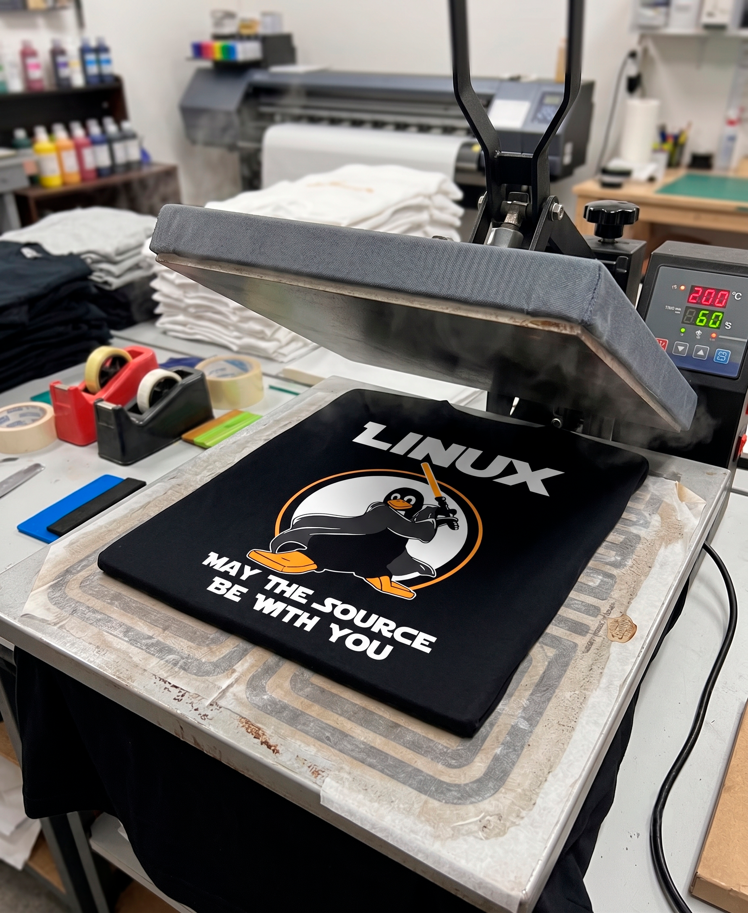

Nosotros
CTRL+WEAR nació de una idea simple:
¿Por qué la ropa tech siempre se siente genérica?
Entre horas de código, cafés de madrugada, trabajos prácticos y terminales abiertas, surgió la inspiración de crear una marca pensada para quienes viven el mundo digital todos los días. Developers, estudiantes, gamers, diseñadores y apasionados por la tecnología comparten algo en común: convertir su forma de pensar en parte de su identidad.
Calidad en cada detalle

En CTRL+WEAR utilizamos prendas confeccionadas con algodón de excelente calidad para garantizar comodidad y durabilidad. Cada producto está pensado para acompañarte tanto en tus proyectos como en tu día a día. Para nosotros, programar no es solo escribir líneas de código: es una forma de conectar.
CTRL+WEAR — Style in command.